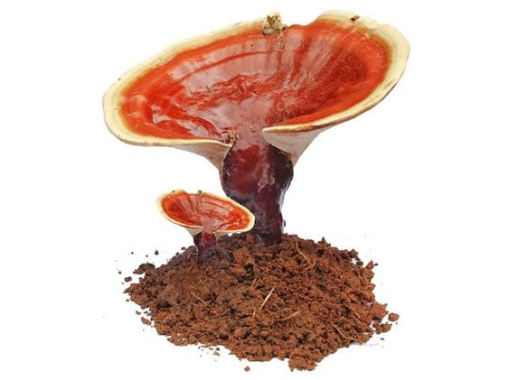

Micología Urbana - Una Web de Hongos
¿Qué es la micología y qué estudia?
La micología es el estudio de los hongos, microorganismos eucarióticos que evolucionaron de manera sucesiva (en tandem) con el reino animal. Sin embargo, a diferencia de estos últimos, la mayoría de los hongos no son móviles y poseen una pared no rígida. A diferencia de las plantas, los hongos no son fotosintéticos. lalalalalalaalalalallalal

Ganoderma Lucidum
El Ganoderma lucidum (también conocido como lingzhi o reishi) es un hongo que se ha consumido por su gran cantidad de propiedades medicinales en Asia durante más de 2000 años. El G lucidum se está volviendo cada vez más popular en los países occidentales como una medicación complementaria para la salud cardiovascular.
TurkeyTale
Dentro de las propiedades del Turkey Tail, destacan, como mencionamos al principio, la optimización de la inmunidad, lo que se explica por su alto contenido de polisacáridos beta-glucanos, que generan el alza de las defensas en los seres humanos. Por este motivo, se convierte en un gran aliado a la hora de estar preparados para enfrentar virus, gripe y resfríos.

Melena de Leon (Hericium Erinaceus)
El hongo medicinal que conecta el intestino con el cerebro.
La Melena de león (Hericium erinaceus) o, simplemente Hericium, es un hongo medicinal ampliamente utilizado por sus beneficios en el organismo. También es conocido como Yamabushitake, Hou Tou Gu (seta de cabeza de mono), hongo erizo o pom-pom-blanc. Cabe destacar su atractivo visual por su imponente cuerpo fructífero globular con unas espinas blancas colgantes que dan la impresión de una cascada congelada o de una majestuosa melena de león (de ahí su curioso nombre popular).

Compra tus packs de cultivo
-
Ubicar el kit en un lugar con luz (sin sol directo), hacerle 3 o 4 bajitos de 1cm y rociarlo de 3 a 4 veces por día. Si el ambiente es muy seco, se recomienda rociarlo más.
-
En un primer momento, el hongo coloniza la bolsa, dejándola completamente blanca.
-
Luego salen los primorios, que 4 o 5 dias mas tarde se convierten en hongos adultos, listos para comer.
-
Una vez cosechados, se repite el ciclo.
-
El kit produce 2 o 3 oleadas, siendo la primera la mas fuerte.
-
El proceso demora 45 días y la cosecha total es de unos 500gramos.
-
Una vez terminado el ciclo, podes compostar el contenido de la bolsa.